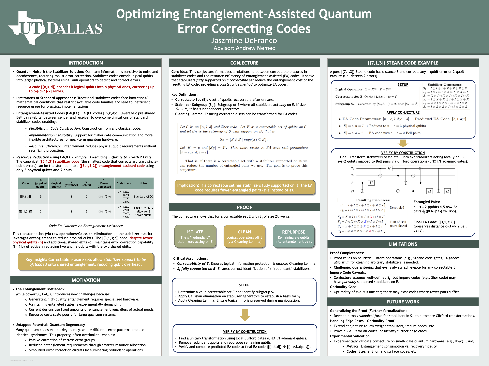
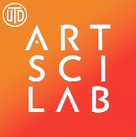
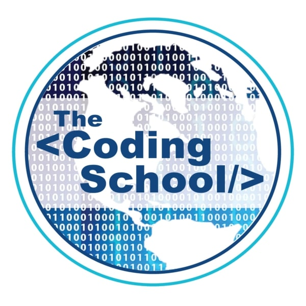
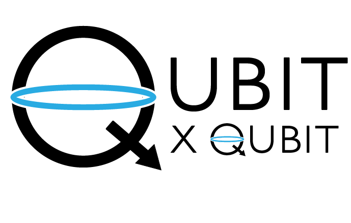
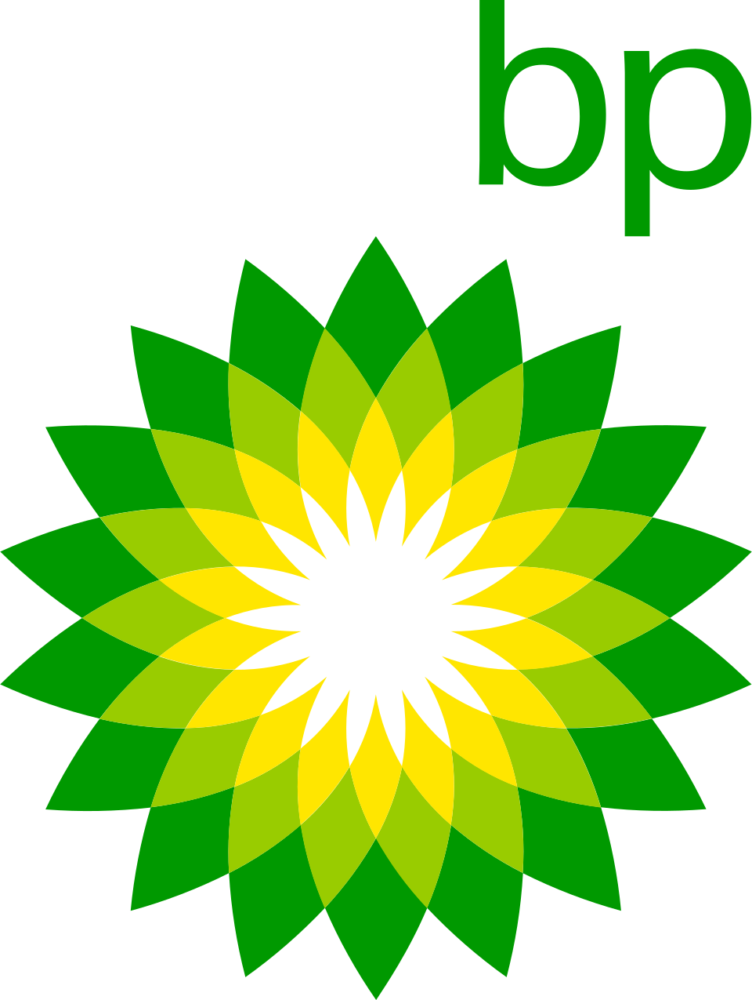

Work Experience
Undergraduate Researcher
Optimized entanglement-assisted quantum error correcting codes (EAQECCs) by developing a novel method to reduce entangled bits in stabilizer codes, enhancing resource efficiency. Formalized a mathematical conjecture into a proof, demonstrating a qubit-to-ebit transformation while preserving error correcting capabilities. Presented findings at the UT Dallas SPUR Symposium (2025).

SPUR Symposium Presentation (2025)
Communications Specialist

Advanced Art Sci Lab initiatives through strategic marketing, event coordination, and data-driven proposal development to drive engagement and organizational success. Developed comprehensive proposals focused on marketing and external partnerships, leveraging data analysis to support campaigns and maximize audience reach. Strategized and executed targeted marketing campaigns promoting Art Sci Lab projects, research, and events in close collaboration with the Bass School Creative Communications team. Monitored cross-platform engagement metrics using Meta Business Suite while creating compelling marketing materials including digital content, flyers, and newsletters. Coordinated end-to-end event logistics, managing everything from initial setup and promotion to on-site activities and post-event reporting, with performance analysis conducted via Meta Business Suite and Power BI to optimize future initiatives. I also occasionally helped take event photos!

Our 2025 Marketing Team!

Example Flyer

"Threads of Ingenuity" Event with Guest Speakers
Early Quantum Career Immersion Intern



Selected for
The Coding School's -
Qubit x Qubit
Early Quantum Career Immersion Program,
a highly competitive initiative bringing together undergraduate students for intensive training in quantum computing with
emphasis on real-world applications.
Developed fundamental quantum mechanics and computing skills through daily
lectures and labs while building professional research capabilities including technical communication and networking.
Completed additional projects implementing quantum algorithms including BB84 and B92 QKD protocols, Grover's algorithm
for graph coloring problems, QAOA, and noise models. Presented final project on the Eckert 91 Quantum Key Distribution
protocol while engaging with mentors from academia and quantum industry partners.
Collaborated with professionals from bp (British Petroleum) across internal Centers of Excellence (COEs) and external
partners to explore hybrid classical-quantum solutions for energy optimization. Investigated implementations utilizing mixed
integer programming, quadratic unconstrained binary optimization (QUBO), and the unit commitment problem, analyzing results
generated by NISQ-era hardware while discussing progress toward fault-tolerant quantum computers and implications for
achieving quantum advantage. Participated in cross-functional discussions regarding successful implementations of quantum,
AI/LLM, and robotics products for applications of interest including energy market operation. Implemented the Variational
Quantum Eigensolver (VQE) to calculate ground states of the transverse Ising model, investigating further applications in
machine learning and protein folding.

2023 EQCI Cohort

bp/QxQ Interns & Mentors

2023 bp Digital Science Team